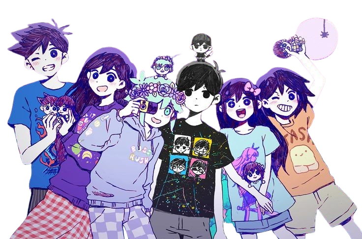
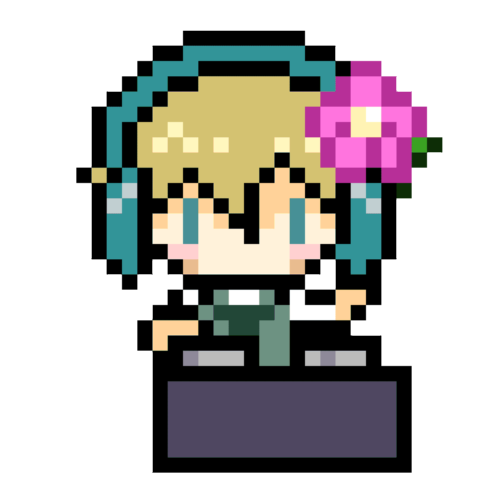
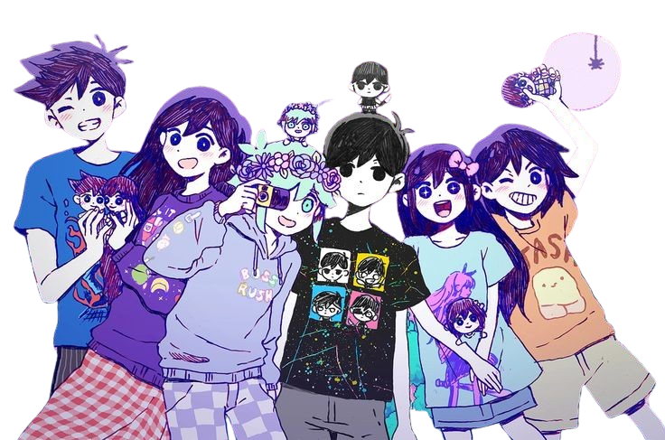
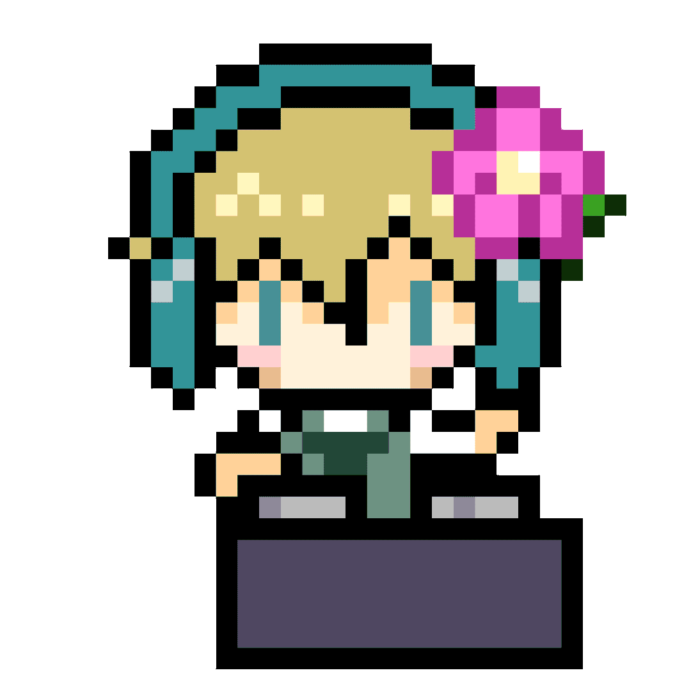

this is omori or also known as sunny. i haven't played it yet, but i've known him since 2022. when i first saw him on the internet, i thought it was me. he kind of looked like me, but then i realized, oh, it's a game. even though i haven't played it, i've already loved it. ☆*: .｡. o(≧▽≦)o .｡.:*☆
this is omori's friend group. they are aubrey, kel, hero, basil, and mari, who has passed away. they're all dealing w the loss of mari, omori's older sister, who was a bright light in their lives. omori is a bit shy and tends to keep to himself, often exploring his feelings in his own unique way (i can rlly relate to him, which is why i alr liked this game without even playing or having any idea abt it). as they journey together, the friends lean on each other for support, sharing memories of mari and learning how to cope with their sadness. it's a cool story about friendship and the importance of being there for each other. (*＾-＾*)
the cat next to omori is mewo, the sleepy cat; she's so quiet and cote. (∪.∪ )...zzz
welcome to white space. your name is omori, and you’ve been here for as long as you can remember. everything around you is bright white; there are no walls. a black lightbulb dangles from the ceiling… wherever that might be. the floor is perpetually cold, and the warmest thing you have is probably your laptop. but it’s okay—you have a blanket, your laptop, a cat, a sketchbook, and a tissue box. that’s all you need.
you often feel down. people annoy you, you think you’re unattractive, and you have no idea where you came from or where you’re headed. you’re just too tired to care.
on good days, your neighbors invite you over, but you wonder, “how can they enjoy being around someone like me?†you miss them now. when will they visit again? maybe today will be a good day—or maybe it’s just a day for sleeping.
yet sometimes, a thought creeps in about a friend you once had—someone truly important. deep down, you sense that you weren’t always this way. you didn’t always live in white space. the truth is… your story has already ended. you just need to remember it. ⊙﹏⊙∥
a young man and his friends go on a quest to find a missing person while facing his past and fears. you play as omori, a young man in black and white, who visits his friends after learning that his best friend, basil, disappeared the day before. along with his friends—aubrey, kel, hero, and his sister mari—they search for basil in a strange world full of colorful characters and challenges. as they explore, they uncover forgotten memories. the choices you make will affect your fate and the fate of others.
i’m sorry if my summary was confusing. if u are more interested in omori, here’s a button below and it's a link to a video that summarizes it for u to understand more. (＞﹏＜) (┬┬﹏┬┬)
i chose this one because it makes me space out the most, and it reminds me of that feeling when you leave school on the last day a bit later than everyone else, even though it’s never happened to me. i can easily picture how quiet and empty it would feel. ≧ ﹏ ≦
mhm, idk, but i sometimes play this when i am just alone in the dark room and scrolling on the internet around late night o((>ω< ))o
this OST is set as my wallpaper background song on my PC, and it gives me a few seconds of nostalgia about my toys. o((⊙﹏⊙))o.